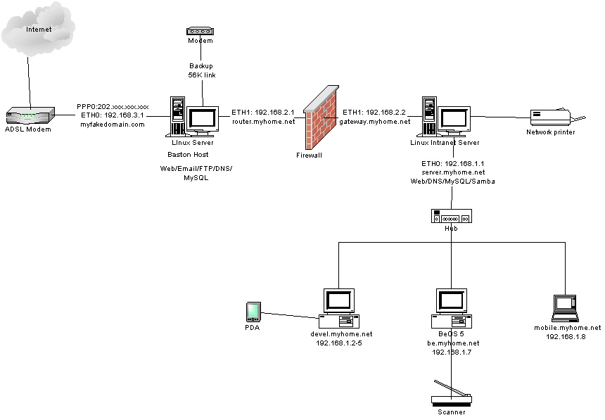
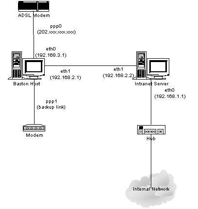

|
Заметка: Имена доменов и IP адреса в этой статье изменены. Я не имею никакого
отношения к myfakedomain.com и myhome.net -- будьте добры, не шлите к ним вопросы
и замечания.
Официальное заявление
В этой статье мы рассмотрим шаги, которые мне пришлось выполнить для того,
чтобы заработал домен, размещенный у меня дома. Это не руководство по указанной
теме. Уже существует множество соответствующих файлов HOWTO и справочников. Это
просто работающий пример, для вашего сведения. Также здесь приведены полезные
ссылки.
Подоплека
В славном 2000 году, когда все говорили или использовали широкополосные сети,
я продолжал использовать мой 28.8kbps модем для нет-серфинга. Причина проста
- не один из провайдеров широкополосного доступа не предоставлял услугу фиксированных
I.P. адресов. У меня же было несколько зарегистрированных доменных имен, расположенных
у разных провайдеров. Услуга хостинга сводится к предоставлению таких сервисов,
как html, perl cgi, pop server и, возможно, mod_rewrite. И никогда не предоставляются
сервисы SMTP(автор ошибается, или не знает - самый известный
провайдер этой услуги в России и странах СНГ, это, конечно же, mail.ru
- Прим.пер), MySQL, PHP4, и вообще все полезное,
разве только за соответствующую плату. Вот почему я искал провайдера, который
бы предоставил мне услугу фиксированных I.P. адресов - я бы смог создать свой
веб-сайт и все, что захочу.
Наконец, в январе 2001, один из провайдеров, работающих в моей области объявил,
что он будет за дополнительную плату предоставлять услугу фиксированных I.P.
адресов. Это было действительно дорого, но, ребята, это то, что мне нужно!!!
Я буду платить за тот сервис, который удовлетворяет моим запросам. Кроме того,
я смогу сэкономить много денег, перестав платить за хостинг. Почему же все-таки
не динамический I.P.? Да, динамический I.P. адрес может покрыть те же требования,
при использовании некоторых ухищрений динамического DNS, например no-ip или
DynDNS, но это все слишком проблематично, и не очень хорошо, если вы планируете
запускать собственный сервер электронной почты.
Планирование сети
Итак, наконец, я получил услугу широкополосного канала. Две недели ушло на
то, что бы прибыл парень и установил мне сплиттер и ADSL модем. Вообще-то я
сам мог бы все это сделать, но компания была не согласна. В любом случае, это
хорошее время для того, чтобы построить сеть и приготовить ее к высокоскоростному
подключению. Перед тем как строить сеть, неплохо бы подумать о ее топологии.
Я воспользовался моими запчастями и потратил немного денег для того, чтобы
сделать две
линукс-машины. Одна из них будет межсетевым экраном с запущенными серверами
FTP, WWW, SMTP и MySQL. Эта машина будет работать как внешний маршрутизатор
между internet и intranet. Другая машина будет выполнять внутренние приложения,
и работать в качестве внутреннего маршрутизатора. Кто-то может спросить: "Почему
два компьютера?". Конечно же, по причине безопасности. Обратитесь к вашим
техническим книгам о межсетевом экранировании для объяснений. Рис 1 демонстрирует
диаграмму моей домашней сети.

Так как я получил лишь один фиксированный IP, я не буду создавать вебсайт
с высоким трафиком. Только один бастионный хост может хорошо выполнять свою
работу, так как это простейшая сеть. Это решение для меня, не обязательно для
всех, кто читает эту статью. Опять таки, думайте о своем плане.
Построение сети
Я выкачал и установил RedHat 7.0 (вообще оригинальный подход
устанавливать .0 версии, когда автор так печется о безопасности [см. выше].
Я бы рекомендовал устанавливать версии .2, или, хотя бы .1 со всеми заплатками
- Прим.пер) на обе машины. Выберите нужные пакеты.
Можно использовать и другие дистрибутивы. Естественно, вам следует выбрать при
установке необходимые пакеты. Помните, что есть необходимые для установки интернет
сервера компоненты. Обратитесь к секции HOW-TO на linuxdocs.org. Я настоятельно
рекомендую вам ознакомиться со следующими документами:
- ISP-Setup-ReadHat
- DSL HOWTO for
Linux
И следующими мини-HOWTO:
- Setting Up Your New
Domain Mini-HOWTO
- Home-Network-mini-HOWTO
- IP-Subnetworking
Если вы не представляете того, что может выполнять линукс, вам необходимо
прочесть 'The
Linux Networking Overview HOWTO'.
Защита бастионного хоста при помощи пакетной фильтрации
Так, у меня есть установленный RedHat на двух машинах, однако они еще
не защищены. Мне необходимо установить межсетевой экран и настроить таблицы
маршрутизации, чтобы защитить мои машины от Интернет, и что бы ликвидировать
возможность выхода пакетов моей локальной сети вовне. Это очень сложная работа
для домашнего пользователя, меня в том числе. Я потратил уйму времени на
поиски в freshmeat.net, google и sourceforge. Попробовал множество скриптов
создания фаервольных правил, и ни один из них не обеспечивает должной надежности
и простоты в изменении настроек. Да, я слишком ленивый для написания собственных
правил фильтрации и маршрутизации. Вам повезло, я нашел действительно хороший
скрипт @ ICEBERG. Результат его работы
легко изменять и настраивать. На обеих моих машинах работают скрипты, сгенерированные
ICEBERG. Вот список полезной информации касательно фильтрации и маршрутизации:
- Firewall-HOWTO
- IP-Masquerade-HOWTO
- IPCHAINS-HOWTO
Если вы хотите использовать Napster за фаерволом, вам нужно прочесть IPMasquerading+Napster
mini-HOWTO
Настройка внешнего DNS сервера на бастионном хосте
Несмотря на то, что я собираюсь использовать HAMMER
NODE для хостирования записи моего доменного имени, мне необходим кэширующий
сервер имен. Вот конфигурационные файлы:
/etc/named.boot
/etc/named.conf
/var/named/named.ca
/var/named/named.local
/var/named/named.myfakedomain.com
/var/named/named.myhome.net
/var/named/named.rev.3
/var/named/named.rev.2
Соединение с ADSL модемом
Соединение с ADSL модемом под линуксом весьма просто - загрузите RPM программы
RP-PPPOE от Roaring Penguin
Software Inc, установите его и запустите adsl-setup, вот и все. Просто как
веник.
Связывание имени домена с бастионным хостом
К этому моменту web сервер еще работать не должен. Исправляется эта ситуация
добавлением в файл /etc/httpd/conf/httpd.conf следующих строк:
ServerName www.myfakedomain.com (для бастионного хоста)
ServerName www.myhome.net (для внутреннего сервера)
Итак, web сервера запущены на обоих серверах. Что теперь? Я запустил мой
любимый браузер Netscape и задал запрос на Google относительно свободного
сервиса DNS. Наконец я нашел HAMMER NODE.
Мне посчастливилось, что я нашел hn.org. Они предлагают сервис, как для динамических,
так и для статических I.P. адресов. У них хороший и простой интерфейс пользователя.
Я создал следующую конфигурацию:
-
После настройки учетной записи в DNS на узле hn.org, я поменял настройку
DNS на обоих моих серверах на сервер предоставленный hn.org. Может понадобиться
некоторое время, пока обновиться система DNS.
Великолепно! Теперь все запросы к www.myfakedomain.com будут пересылаться
моему бастионному хосту. Просто, да? Все это благодаря отменной работе hn.org.
Для более детальной информации о настройке DNS, обращайтесь к DNS-HOWTO.
Машина, подключенная с помощью ADSL модема, обеспечивает общий доступ
к ресурсам. Это означает что, кто угодно, откуда угодно может до него доступиться.
Соответственно, я должен принять какие-то меры безопасности. Я указал следующие
правила в файлах /etc/hosts.allow и /etc/hosts.deny:
/etc/hosts.allow
ALL: 127.0.0.1
in.telnetd: 192.168.2.2
in.ftpd: 192.168.2.2
sshd: 192.168.2.2 203.xxx.xxx.xxx
/etc/hosts.deny
ALL: ALL : spawn (echo Попытка доступа с %h %a to %d at `date` | tee -a
/xxx/xxx/tcp.deny.log | mail my@email.com )
Как видно из вышеприведенных конфигурационных файлов, все машины из внутренней
сети могут соединяться по протоколам telnet, ftp, ssh и sftp с бастионным
хостом. Адрес 203.xxx.xxx.xxx - это I.P. адрес моей офисной машины, которой
разрешено подключаться по ssh и обмениваться файлами при помощи sftp. Доступ
по протоколам telnet и ftp к бастионному хосту из вне всегда запрещен. Это
связано с тем, что имя пользователя и пароль передаются в незашифрованном
виде. Как следствие эта пара может быть легко перехвачена хакерами. HTTPD
не включен в конфигурацию, потому что он не контролируется демоном INETD.
Безопасное соединение с бастионным хостом при помощи SSH
Из внутренней сети к бастионному хосту можно подсоединятся по протоколам
Telnet и FTP. Для соединения из внешней сети вы должны использовать SSH
и SFTP. Обратитесь к статье 'Применение
ssh' из Linux Gazette для информации о настройке и использовании
SSH. Для работы SSH вы должны установить и запустить SSHD. SFTP можно загрузить
с узла http://enigma.xbill.org/sftp/.
SFTP очень просто устанавливается и настраивается - прочтите файл readme,
размещенный на веб сервере.
Настройка внутреннего сервера
Для того, чтобы защитить внутреннюю сеть я запретил любой доступ из внешней
сети к машинам моей внутренней сети:
/etc/hosts.allow
ALL: LOCAL 192.168.1.2 192.168.1.7
/etc/hosts.deny
ALL: ALL : spawn (echo Попытка доступа с машиныh %a к %d `date` | tee
-a /xxx/xxx/tcp.deny.log | mail my@email.com )
В случае какой-либо попытки доступиться к моим внутренним машинам, мне
будет отправлена электронная почта.
Как показано на рис. 1, все внутренние машины имеют свое имя. Вы можете
использовать любое имя хоста и домена для внутренней сети, даже если это
имя уже зарегистрировано в NIC. Однако, необходимо проявить некоторую осторожность
при установке внутреннего DNS сервера.
Настройка внутреннего DNS сервера - named
Опять таки, для настройки DNS сервера обратитесь к соответствующим HOWTO
и техническим руководствам. Ниже представлены мои конфигурационные файлы
для внутреннего сервера:
/etc/named.boot
/etc/named.conf
/var/named/named.ca
/var/named/named.local
/var/named/named.myhome.net
/var/named/named.rev.1
/var/named/named.rev.2
Еще о безопасности
Воруг вас множество хакеров. Применение лишь пакетной фильтрации и контроля
доступа из hosts.allow/hosts.deny не достаточно. Новые дыры обнаруживаются
каждый день. Вы должны подписаться на соответствующие рассылки и обновлять
ваш линукс постоянно. Еще немного статей и программ, относящихся к безопасности:
- Security for the Home Network LG #46
- Linux Firewall and
Security Site
- Mason - the automated firewall
builder for Linux
- Astaro AG (Great firewall linux distribution
with web interface)
- The Ethereal Network Analyzer
- Nessus - The Security Scanner
- Stunnel - Universal SSL Wrapper
Как на счет POP3 и SMTP серверов?
POP3, так же как и TELNET с FTP, передает имя и пароль в открытом виде.
SPOP может быть настроен для шифрования данных POP. Однако, я не желаю сохранять
мою почту нигде за пределами моей внутренней сети. Потому я не собираюсь
настраивать на бастионном хосте сервер POP3. Причина запрета SMTP проста
- открытая доставка опасна, ее могут использовать спаммеры для рассылки
своего ненавистного спама. С другой стороны, установка SMTP сервера без
отрытой доставки бессмысленно, так как я не смогу отправлять почту ниоткуда,
кроме как из своей сети. Я могу просто зарегистрироваться на моем бастионном
хосте при помощи ssh и запустить pine для проверки почты.
Поддомен для вебсервера
Ух! Похоже, все заработало. Теперь я могу разместить мой веб, емейл и
ftp сервер на моем домашнем линуксе. Теперь мне нужен поддомен resume.myfakedomain.com
для размещения моего онлайнового резюме. Просто добавьте следующие строки
в файл /etc/httpd/conf/httpd.conf:
RewriteEngine on
## Игнорировать www.myfakedomain.com
RewriteCond %{HTTP_HOST} !^www\.myfakedomain\.com [NC]
## Каталог с именем "поддомен" должен существовать
RewriteCond %{DOCUMENT_ROOT}/%1 -d
## Добавить затребованный "поддомен" в URL
## [C] означает, что следующее правило Rewrite будет использовать это
RewriteRule ^(.+) %{HTTP_HOST}/$1 [C]
## Перевести abc.myfakedomain.com/foo в myfakedomain.com/abc/foo
RewriteRule ^([a-z-]+)\.myfakedomain\.com/?(.*)$ http://www.myfakedomain.com/$1/$2
[L]
Другие конфигурационные файлы
/etc/hosts (бастионный хост)
127.0.0.1 localhost.localdomain localhost
192.168.2.1 router.myhome.net router
192.168.2.2 gateway.myhome.net gateway
202.xxx.xxx.xxx www.myfakedomain.com www
/etc/hosts (внутренний шлюз)
127.0.0.1 localhost.localdomain localhost
192.168.1.1 server.myhome.net server
192.168.1.2 devel.myhome.net devel
192.168.1.3 php.myhome.net php
192.168.1.4 asp.myhome.net asp
192.168.1.7 be.myhome.net be
192.168.2.1 router.myhome.net router
192.168.2.2 gateway.myhome.net gateway
/etc/resolv.conf (бастионный хост)
search myfakedomain.com
nameserver 127.0.0.1
/etc/resolv.conf (внутренний шлюз)
search myhome.net
nameserver 127.0.0.1
Установки сетевых карт
Установки порта Ethernet:

Остальные конфигурационные файлы:
/etc/sysconfig/network (бастионный
хост)
/etc/sysconfig/network-scripts/ifcfg-eth0
(бастионный хост)
/etc/sysconfig/network-scripts/ifcfg-eth1
(бастионный хост)
/etc/sysconfig/network (внутренний
шлюз)
/etc/sysconfig/network-scripts/ifcfg-eth0
(внутренний шлюз)
/etc/sysconfig/network-scripts/ifcfg-eth1
(внутренний шлюз)
/etc/rc.d/rc.local (бастионный хост
и внутренний шлюз)
Настройки TCP/IP
-
| Бастионный хост |
| Основной шлюз: |
ppp0 |
| Сервер имен: |
127.0.0.1 |
| |
| Сетевой интерфейс: |
eth0 |
| I.P. адрес: |
192.168.3.1 |
| Маска подсети: |
255.255.255.0 |
| |
| Сетевой интерфейс: |
eth1 |
| I.P. адрес: |
192.168.2.1 |
| Маска подсети: |
255.255.255.0 |
| Внутренний сервер |
| Основной шлюз: |
192.168.2.1 |
| Сервер имен: |
127.0.0.1 |
| |
| Сетевой интерфейс: |
eth0 |
| I.P. адрес: |
192.168.1.1 |
| Маска подсети: |
255.255.255.0 |
| |
| Сетевой интерфейс: |
eth1 |
| I.P. адрес: |
192.168.2.2 |
| Маска подсети: |
255.255.255.0 |
| Рабочие станции внутренней сети |
| Основной шлюз: |
192.168.1.1 |
| Сервер имен: |
192.168.1.1 |
| |
| Сетевой интерфейс: |
eth0 |
| I.P. адрес: |
192.168.1.X |
| Маска подсети: |
255.255.255.0 |
Долнейшая установка
Что, если вы хотите доступиться до вашей внутренней машины под управлением
windowsz извне, при том, что между вами находиться межсетевой экран? Ответ
- используйте технологию Виртуальной Частной Сети (Virtual Private Network
VPN).
Линукс текущей версии поддерживает технологию VPN. Просмотрите также VPN
HOWTO. Если вы хотите разместить на одном бастионном хосте несколько
разных доменов, вам потребуются специальные настройки для веб и емейл серверов.
Следующая моя статья будет рассматривать технологию VPN и настойку виртуальных
доменов.
Если у вас имеются пожелания или комментарии относительно этого документа,
обращайтесь ко мне по адресу rayxtra@hotmail.com.
|